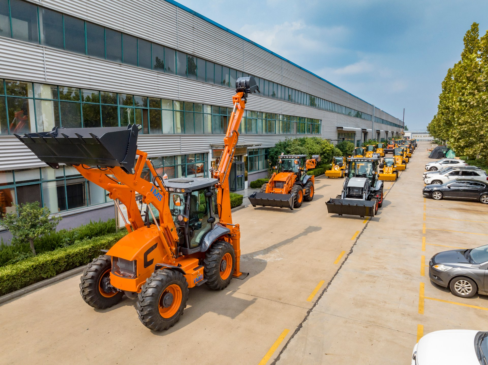

The first question every buyer asks me is always about price. The second question — the one that actually causes problems if you get it wrong — is almost always about weight. "How much does this thing weigh?"
It sounds like a simple question. It is not. I have watched buyers order a machine, pay for it, and then discover at the port that their crane is too small, their trailer is overloaded, or their foundation will not take the ground pressure. Weight is not a spec-sheet detail you skim past. It decides what you can transport, where you can work, and whether your job site survives the first day.
This guide is the weight conversation I have with every serious buyer, written down so you can keep it. I will give you the real numbers for every model I sell, explain the difference between the three weights on every spec sheet, and show you how to choose the size that matches your work — not the size that looks impressive in a brochure.

In This Guide
- How Much Does a Backhoe Loader Weigh?
- Why Weight Matters More Than You Think
- Operating Weight vs. Shipping Weight vs. Transport Weight
- Backhoe Loader Weight by Model (Real Numbers)
- Dimensions Explained: Length, Width, Height
- Complete Specification Comparison
- How Weight & Size Affect Container Shipping
- Ground Pressure & Job Site Requirements
- How to Choose the Right Size for Your Work
- Red Flags: When Weight Specs Lie
- Frequently Asked Questions
How Much Does a Backhoe Loader Weigh?
Straight answer: a backhoe loader weighs between 1,500 kg (3,300 lb) and 10,870 kg (24,000 lb), depending on the class. The most common mid-size machines used on construction sites weigh 6,000 to 9,000 kg (13,200-19,800 lb).
Here is how the classes break down in the real world:
| Class | Operating Weight | Typical Use |
|---|---|---|
| Mini / compact (incl. electric) | 1,500 - 2,400 kg | Greenhouses, orchards, urban landscaping, tight indoor work |
| Small / utility | 3,500 - 4,500 kg | Residential digging, utility trenches, small farms |
| Mid-size | 6,000 - 8,000 kg | General construction, municipal work, loading trucks |
| Heavy / full-size | 9,000 - 10,900 kg | Road construction, mining support, quarry work, heavy loading |
When someone tells you "it's a 7-ton machine," be careful — that number is often the rated load capacity, not the actual weight. A backhoe loader marketed as "7-ton" usually weighs around 6,000-6,500 kg in reality. I will come back to this in the red flags section, because it trips up more buyers than anything else on this page.
Rule from the floor: Whenever a supplier quotes you a weight, ask them to confirm it in writing as operating weight: full fuel, standard bucket, no operator. If they cannot confirm that definition, the number is marketing, not engineering.
Why Weight Matters More Than You Think
Weight is not just a number for crane hire. It quietly decides four things about your project:
1. Transport and Loading
Every truck, trailer, and container has a legal limit. An overloaded trailer is not only illegal in most countries — it is dangerous. I have seen a 9,000 kg machine on a trailer rated for 8,000 kg. The driver made it 300 km before a tire blew at highway speed. Nobody was hurt. That was luck.
Your crane or forklift also needs a margin. If the machine weighs 8,000 kg, you do not hire an 8-ton crane. You hire a crane rated for at least 12 tons, because lifting capacity drops as the boom extends, and you never want to lift at 100% of rating.
2. Job Site Ground Conditions
Weight divided by tire contact area gives you ground pressure. A heavy machine on soft ground ruts the site, gets stuck, or sinks while digging. This matters enormously for farms, gardens, and soft-soil regions. Sometimes the "wrong" (lighter) machine is the right one for your ground.
3. Digging and Lifting Performance
Weight is a working tool, not a burden. A heavier machine resists being pushed around when the bucket hits hard ground, and it gives the loader end more down-force and stability when lifting heavy loads. That is why a 9,000 kg machine can lift more than a 4,500 kg machine with the same hydraulic pressure.
4. Foundation and Floor Loads
If you are working indoors, on a mezzanine, on a bridge, or over a basement, the floor has a load rating. A 4,500 kg machine on a floor rated for 2,000 kg is an engineering problem, not a minor detail. Always check the floor rating before you bring a machine inside.
Operating Weight vs. Shipping Weight vs. Transport Weight
Every backhoe loader spec sheet actually contains three different weights, and mixing them up is where expensive mistakes start.
Operating Weight (the one that matters most)
The machine ready to work: full fuel, full hydraulic oil, all fluids at operating levels, standard bucket installed, standard tires, no operator. This is the number you use for:
- Ground pressure calculations
- Trailer and truck capacity planning
- Crane and flatbed loading decisions
- Comparing machines honestly against each other
Shipping Weight (the lighter one)
The machine prepared for transport: fluids drained, boom and bucket detached, sometimes the cab removed, stabilizer legs folded or removed. A mid-size machine can be 500-1,500 kg lighter in shipping trim. This is the number freight companies quote from — and it is why your freight quote never matches what you expected when you looked at the brochure weight.
Transport / Crated Weight
Shipping weight plus crate, packing, and spare parts included with the machine. When you plan container loading, use this number, not operating weight.
Rule from the floor: If you only remember one weight, remember the operating weight. Then never use it to plan shipping, and never use shipping weight to plan work. They serve different purposes, and crossing them is how machines end up stuck at a port.
Backhoe Loader Weight by Model (Real Numbers)
These are the actual operating weights of the machines I sell and ship from the factory floor — full fuel, standard bucket, no operator. No rounding, no marketing math.
| Model | Class | Operating Weight | Dig Depth | Loader Bucket |
|---|---|---|---|---|
| BL 15-06 (electric) | Mini | 1,500 kg | 1,580 mm | 0.15 m³ |
| BL 20-07 (diesel) | Mini | 2,350 kg | 1,850 mm | 0.40 m³ |
| BL 35-12 | Small | 3,500 kg | 2,800 mm | 0.40 m³ |
| BL 45-18 | Small | 4,500 kg | 3,000 mm | 0.50 m³ |
| BL 70-25 | Mid | 6,300 kg | 3,400 mm | 0.60 m³ |
| BL 80-25 | Mid | 8,000 kg | 3,600 mm | 0.80 m³ |
| BL 90-25 | Heavy | 9,000 kg | 3,800 mm | 0.80 m³ (1.0 opt.) |
| BL 105-25 | Heavy | 10,870 kg | 4,000 mm | 1.00 m³ |
Notice something: the jump between classes is not small. From the BL 35-12 at 3,500 kg to the BL 70-25 at 6,300 kg, you add 2,800 kg of steel. That is the difference between a machine you can put on a standard farm trailer and a machine that needs a proper low-bed truck. When you are choosing, the transport question is often the real deciding factor, not the dig depth.
If you are working out which model fits your ground and your budget, I wrote a full guide on how to choose a backhoe loader that walks through the decision model by model.
Dimensions Explained: Length, Width, Height
Weight and size travel together. A machine that is too wide for your site or too tall for your container is a problem no amount of lifting capacity can fix.
Overall Length
Measured with the loader bucket in standard position and the backhoe boom fully retracted. This is the number you need for parking, driving through gates, and loading on a trailer. On our mid and heavy models, that is 6,200 to 7,200 mm — roughly 20 to 24 feet. A standard 40-ft flat rack or open-top container fits them, but the machine rarely fits with attachments in place.
Overall Width
Measured across the widest point — usually the rear tires or the loader bucket. Our mid-size machines run 2,000-2,360 mm wide. Here is a practical number every buyer should memorize: the internal width of a standard shipping container is about 2,350 mm. Any machine wider than that is not going in a standard container, period.
Overall Height
Measured to the top of the cab or exhaust. The internal height of a standard container is about 2,390 mm. The BL 70-25 stands 2,900 mm tall with the cab on — which is why it ships with the cab removed or via flat rack. Knowing your height clearance is also how you avoid driving into a warehouse door that is 2.6 meters.
Turning Radius
Not strictly a dimension, but buyers ask me about it constantly. On our models it ranges from a tight 3,000 mm dig radius on the mini BL 20-07 up to 6,500 mm on the BL 105-25. If you work in narrow streets or farm lanes, this number matters more than length.
Complete Specification Comparison
Here is the full picture across the lineup, so you can compare like for like. All weights are operating weight; all dig depths are maximum.
| Specification | BL 15-06 | BL 20-07 | BL 35-12 | BL 45-18 | BL 70-25 | BL 80-25 | BL 90-25 | BL 105-25 |
|---|---|---|---|---|---|---|---|---|
| Engine | 72V / 120V electric | Changchai 390, 25 kW | Xinchai, 37 kW | Xinchai 498, 48 kW | Yuchai YC4FA, 55 kW | Weichai WP4.1Z, 73 kW | Weichai WP4.1Z, 73 kW | Weichai WP4.1Z, 73 kW |
| Operating Weight | 1,500 kg | 2,350 kg | 3,500 kg | 4,500 kg | 6,300 kg | 8,000 kg | 9,000 kg | 10,870 kg |
| Max Dig Depth | 1,580 mm | 1,850 mm | 2,800 mm | 3,000 mm | 3,400 mm | 3,600 mm | 3,800 mm | 4,000 mm |
| Loader Bucket | 0.15 m³ | 0.40 m³ | 0.40 m³ | 0.50 m³ | 0.60 m³ | 0.80 m³ | 0.80 m³ (1.0 opt.) | 1.00 m³ |
| Max Speed | 12 km/h | 18 km/h | 25 km/h | 30 km/h | 35 km/h | 40 km/h | 40 km/h | 40 km/h |
| Overall Dimensions (L×W×H) | — | 4,700 × 1,450 × 2,400 mm | — | — | 6,200 × 2,000 × 2,900 mm | — | 7,000 × 2,200 × 3,300 mm | 7,200 × 2,360 × 3,450 mm |
| Max Digging Force | — | — | — | — | — | — | — | 42 kN |
| Container Shipping | 20-ft standard | 20-ft standard | 20-ft standard | 20-ft standard | 20-ft (disassembled) | Flat rack / open-top | Flat rack / open-top | Flat rack / open-top |
| Warranty | 12 months / 1,000 h | 12 months / 1,500 h | 12 months / 1,500 h | 12 months / 1,500 h | 12 months / 1,500 h | 12 months / 1,500 h | 12 months / 1,500 h | 12 months / 1,500 h |
Every machine in this table ships with a 12-month warranty and the complete set of genuine parts to support it. If you want the transport specifics for any single model — exact container size, crating, loading plan — that is exactly what I do every day. Send me your port and I will tell you exactly how it ships.
How Weight & Size Affect Container Shipping

Shipping is where weight and dimensions stop being theory. Here is how it actually plays out:
20-Foot Standard Container
Internal dimensions: roughly 5,900 × 2,350 × 2,390 mm. This is the workhorse for smaller machines:
- BL 15-06 and BL 20-07 — load fully assembled. Two of the BL 20-07 can even go in one container, which halves your freight per machine.
- BL 35-12 and BL 45-18 — load assembled, bucket removed. Straightforward 20-ft loading.
40-Foot High Cube Container
Internal dimensions: roughly 12,020 × 2,350 × 2,690 mm. The honest container for mid-size and large machines:
- BL 70-25 — a 20-ft container will not work. Even disassembled, the length and height exceed 20-ft limits. This machine ships in a 40-ft high cube, with the cab and boom detached for loading.
- BL 80-25 — depending on tire and cab configuration, also ships in a 40-ft high cube with partial disassembly. I confirm the exact loading plan for every order because the details matter.
Flat Rack / Open-Top
For the BL 90-25 and BL 105-25, even a 40-ft high cube is too small in height. These machines are 2.2-2.36 m wide and 3.3-3.45 m tall — they physically will not fit a standard box with the cab on. Flat rack or open-top shipping costs more than a standard container, but it means the machine arrives with far less disassembly, so you save on reassembly labor and risk.
I go through all the shipping scenarios — port options, container types, costs, paperwork — in my backhoe loader shipping guide. If you are importing from China, read that one before you pay anyone for freight.
Ground Pressure & Job Site Requirements
Ground pressure is operating weight divided by the total tire contact area. The softer your ground, the more it matters.
A few practical reference points:
- Hard compacted ground / concrete — almost any backhoe loader works. Weight is not a concern.
- Firm soil, construction sites — the 6,000-8,000 kg class is fine. Normal working conditions.
- Soft soil, farms, wet seasons — this is where you want a mini or a lighter utility machine, or you budget for wider tires. The 2,350 kg BL 20-07 on wide tires will get through ground that stops an 8-ton machine cold.
- Sand, mud, coastal sites — mini machines or tracked equipment are the honest answer. A rubber-tired backhoe loader at 8,000 kg will sink. I tell buyers this even when it costs me a sale, because a stuck machine is a worse customer experience than an honest "no."
Rule from the floor: When you use the backhoe end, the stabilizers carry most of the machine's weight and spread it out. That is why a backhoe loader can dig in ground where driving would be a problem. But when you drive, you are back to tire contact area — and that is when soft ground wins.
How to Choose the Right Size for Your Work
Every week, someone asks me: "Vivian, which size do I need?" My answer is always the same. Do not start with the machine. Start with your three hardest jobs:
Step 1: What is your deepest trench?
Add 300-500 mm of clearance to the deepest cut you actually make. If you dig 3-meter trenches for drainage, you need a machine with at least 3,300-3,500 mm of dig depth. That points you at the BL 70-25 (3,400 mm) as the minimum honest choice.
Step 2: What is your heaviest loader lift?
Loader capacity and machine weight go together. If you load sand, gravel, or aggregate into trucks, watch the bucket size: a 0.4 m³ bucket on a 3,500 kg machine moves noticeably less per cycle than a 0.8 m³ bucket on an 8,000 kg machine. Over a full day, that difference is hours of work.
Step 3: What is your tightest space?
Measure your narrowest gate, your lowest door, your smallest turning area. If your work is on residential streets in dense cities, a 7-meter-long, 6.5-meter-turning machine is a liability. The mini class — BL 15-06 or BL 20-07 — exists exactly for this.
Then the final question, the one nobody wants to hear: how is the machine getting to site? If your site can only accept a 20-ft container or a standard farm trailer, that constraint may be the one that actually selects your model. I have sold the BL 35-12 to buyers who would have preferred the 70-25, purely because their island or their village road could not take the bigger machine. That was the right sale.
And if you are choosing between new and used, weight and age change the picture — I covered that decision in new vs used backhoe loaders.
Red Flags: When Weight Specs Lie
I have seen every trick in the book when it comes to weight numbers. Here is what to watch for:
1. "7-Ton" Marketing Math
The most common trap. A dealer quotes "7-ton backhoe loader" and the spec sheet shows 6,200 kg operating weight. The "7-ton" was the rated load of the loader arm, or just a round marketing number. Always demand the operating weight figure in kilograms, in writing.
2. Weight Without a Definition
If a spec sheet just says "Weight: 8,500 kg" with no definition, treat it as unverified. Empty fuel vs full fuel is worth 100-200 kg on a large machine. Ask: full fuel? standard bucket? with operator? without?
3. Comparing Different Definitions
One dealer quotes you operating weight, another quotes shipping weight, and the numbers look similar — so you think the machines weigh the same. They do not. Force every supplier to use the same definition before you compare.
4. Dimensions That Shrink
Some spec sheets quote length with the bucket curled in tight, which shaves half a meter off the real footprint. Ask for dimensions with the bucket in the standard working position. That is the number your gate and container actually see.
5. No Sticker, No Proof
Every real machine has a nameplate (usually near the engine or inside the cab door) with the actual serial number and operating weight. If a supplier cannot tell you what the nameplate says, they have never weighed the machine. Ask them to photograph the nameplate — I have never met a legitimate factory that hesitates to send that photo.
Rule from the floor: A supplier who resists answering weight questions is a supplier hiding something. Weight is the easiest thing to verify in this industry — there is no excuse for vagueness. I send nameplate photos before my buyers even ask.
Frequently Asked Questions
How much does a backhoe loader weigh?
A backhoe loader weighs between 1,500 kg (3,300 lb) for a mini electric model and 10,870 kg (24,000 lb) for a full-size heavy model. The most common mid-size machines on construction sites weigh 6,000-9,000 kg. The exact figure depends on the model, engine, tires, and attachments installed.
What is operating weight on a backhoe loader?
Operating weight is the machine's total weight when ready to work: full fuel, full hydraulic oil, all fluids at operating levels, standard bucket and tires installed, and no operator. It is the number used for ground pressure, trailer planning, and crane loading. Do not use shipping weight for these calculations.
How much does a 7-ton backhoe loader weigh?
A "7-ton" backhoe loader usually refers to the rated load capacity or marketing class, not the actual weight. A machine marketed as 7-ton typically has an operating weight of 6,000-6,500 kg. Always ask for the official operating weight from the specification sheet.
What is the difference between operating weight and shipping weight?
Operating weight is the machine ready to work — full fluids, standard bucket and tires. Shipping weight is the machine prepared for transport — fluids drained, boom and bucket detached, sometimes the cab removed. Shipping weight is always lighter, sometimes by 500-1,500 kg. Use operating weight for work planning, shipping weight for freight planning.
What is the maximum dig depth of a full-size backhoe loader?
Full-size backhoe loaders typically dig to a maximum depth of 3,600-4,000 mm (11.8-13.1 ft). Mini models dig 1,600-1,900 mm, and mid-size models reach 2,800-3,400 mm. If you need to trench deeper than 4 meters, you should be looking at a full-size excavator instead.
Can a backhoe loader fit in a 20-foot shipping container?
Only mini and small models fit a 20-ft container assembled. Mid-size machines like a 6,300 kg model fit only when disassembled. Larger models (8,000 kg and up) ship via flat rack or open-top container. Internal dimensions of a 20-ft container are about 5,900 × 2,350 × 2,390 mm, which decides what fits.
What is ground pressure on a backhoe loader?
Ground pressure is the machine's operating weight divided by the total tire contact area, expressed in kPa or psi. A heavy machine on soft ground ruts or sinks. Stabilizers spread the load when digging, but when driving on soft soil, machine weight and tire width decide whether you get stuck.
How do I choose the right size backhoe loader?
Match the machine to your three hardest jobs: the deepest trench you dig, the heaviest load you lift with the loader, and the tightest space you drive into. Choose for your hardest job, not your most common one. Also check how the machine will reach the site — transport constraints often decide the model.
Why do specification sheets disagree on weight?
Because there is no universal standard for what gets included. Some list empty fuel tanks, some half fuel, some a different bucket, some without cab equipment. Two machines of the same class can show weights that differ by 500 kg for the same configuration. Always confirm the definition with the supplier in writing.
Does a heavier backhoe loader dig better?
Usually, but not always. Weight helps stability and penetration in hard ground, and it gives the loader end more down-force. But digging force also depends on hydraulics, boom geometry, and bucket teeth. Compare digging force (kN) together with weight, not weight alone.
Not Sure Which Size Fits Your Job?
Tell me your deepest trench, your heaviest load, and your site access — I will tell you the honest answer, even when it means selling you a smaller machine. I know these numbers from the factory floor, and I would rather earn your trust than your first order.
Message Vivian on WhatsApp